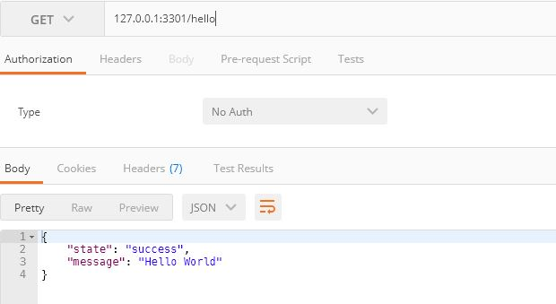

<!DOCTYPE html>
<html>
<head><meta name="generator" content="Hexo 3.8.0">
    <meta charset="utf-8">

    

    
    <title>Express에 Typescript와 Inversify 적용하기 | devtory</title>
    
    <meta name="viewport" content="width=device-width, initial-scale=1, maximum-scale=1">
    
        <meta name="keywords" content="Backend,Express,Typescript">
    
    <meta name="description" content="Express에 Typescript와 Inversify 적용하기 정리 목적으로 작성한 글 입니다   목표 :  Express 프로젝트에 Typescript와 Inversify를 적용   환경 123Windows 10Node.js 8.11.2Npm 6.4.1 / yarn 1.7.0  프로젝트 생성   123$ mkdir &amp;lt;프로젝트 폴더&amp;gt;$ cd &amp;">
<meta name="keywords" content="Backend,Express,Typescript">
<meta property="og:type" content="article">
<meta property="og:title" content="Express에 Typescript와 Inversify 적용하기">
<meta property="og:url" content="https://devtory.github.io/2018/11/16/Express에 Typescript와 Inversify 적용하기/index.html">
<meta property="og:site_name" content="devtory">
<meta property="og:description" content="Express에 Typescript와 Inversify 적용하기 정리 목적으로 작성한 글 입니다   목표 :  Express 프로젝트에 Typescript와 Inversify를 적용   환경 123Windows 10Node.js 8.11.2Npm 6.4.1 / yarn 1.7.0  프로젝트 생성   123$ mkdir &amp;lt;프로젝트 폴더&amp;gt;$ cd &amp;">
<meta property="og:locale" content="ko">
<meta property="og:image" content="https://devtory.github.io/2018/11/16/Express에%20Typescript와%20Inversify%20적용하기/postman_result.jpg">
<meta property="og:updated_time" content="2018-12-08T04:05:25.469Z">
<meta name="twitter:card" content="summary">
<meta name="twitter:title" content="Express에 Typescript와 Inversify 적용하기">
<meta name="twitter:description" content="Express에 Typescript와 Inversify 적용하기 정리 목적으로 작성한 글 입니다   목표 :  Express 프로젝트에 Typescript와 Inversify를 적용   환경 123Windows 10Node.js 8.11.2Npm 6.4.1 / yarn 1.7.0  프로젝트 생성   123$ mkdir &amp;lt;프로젝트 폴더&amp;gt;$ cd &amp;">
<meta name="twitter:image" content="https://devtory.github.io/2018/11/16/Express에%20Typescript와%20Inversify%20적용하기/postman_result.jpg">
    

    
        <link rel="alternate" href="/" title="devtory" type="application/atom+xml">
    

    

    <link rel="stylesheet" href="/libs/font-awesome/css/font-awesome.min.css">
    <link rel="stylesheet" href="/libs/titillium-web/styles.css">
    <link rel="stylesheet" href="/libs/source-code-pro/styles.css">

    <link rel="stylesheet" href="/css/style.css">

    <script src="/libs/jquery/3.3.1/jquery.min.js"></script>
    
    
        <link rel="stylesheet" href="/libs/lightgallery/css/lightgallery.min.css">
    
    
        <link rel="stylesheet" href="/libs/justified-gallery/justifiedGallery.min.css">
    
    
    


</head>
</html>
<body>
    <div id="wrap">
        <header id="header">
    <div id="header-outer" class="outer">
        <div class="container">
            <div class="container-inner">
                <div id="header-title">
                    <h1 class="logo-wrap">
                        <a href="/" class="logo"></a>
                    </h1>
                    
                        <h2 class="subtitle-wrap">
                            <p class="subtitle">Summary</p>
                        </h2>
                    
                </div>
                <div id="header-inner" class="nav-container">
                    <a id="main-nav-toggle" class="nav-icon fa fa-bars"></a>
                    <div class="nav-container-inner">
                        <ul id="main-nav">
                            
                                <li class="main-nav-list-item">
                                    <a class="main-nav-list-link" href="/">홈</a>
                                </li>
                            
                                        <ul class="main-nav-list"><li class="main-nav-list-item"><a class="main-nav-list-link" href="/categories/Backend/">Backend</a><ul class="main-nav-list-child"><li class="main-nav-list-item"><a class="main-nav-list-link" href="/categories/Backend/Express/">Express</a></li></ul></li><li class="main-nav-list-item"><a class="main-nav-list-link" href="/categories/Frontend/">Frontend</a><ul class="main-nav-list-child"><li class="main-nav-list-item"><a class="main-nav-list-link" href="/categories/Frontend/React/">React</a></li></ul></li><li class="main-nav-list-item"><a class="main-nav-list-link" href="/categories/Javascript/">Javascript</a></li><li class="main-nav-list-item"><a class="main-nav-list-link" href="/categories/Mobile/">Mobile</a><ul class="main-nav-list-child"><li class="main-nav-list-item"><a class="main-nav-list-link" href="/categories/Mobile/ReactNative/">ReactNative</a></li></ul></li></ul>
                                    
                                <li class="main-nav-list-item">
                                    <a class="main-nav-list-link" href="/about/index.html">About</a>
                                </li>
                            
                        </ul>
                        <nav id="sub-nav">
                            <div id="search-form-wrap">

    <form class="search-form">
        <input type="text" class="ins-search-input search-form-input" placeholder="검색">
        <button type="submit" class="search-form-submit"></button>
    </form>
    <div class="ins-search">
    <div class="ins-search-mask"></div>
    <div class="ins-search-container">
        <div class="ins-input-wrapper">
            <input type="text" class="ins-search-input" placeholder="Type something...">
            <span class="ins-close ins-selectable"><i class="fa fa-times-circle"></i></span>
        </div>
        <div class="ins-section-wrapper">
            <div class="ins-section-container"></div>
        </div>
    </div>
</div>
<script>
(function (window) {
    var INSIGHT_CONFIG = {
        TRANSLATION: {
            POSTS: '포스트',
            PAGES: 'Pages',
            CATEGORIES: '카테고리',
            TAGS: '태그',
            UNTITLED: '(Untitled)',
        },
        ROOT_URL: '/',
        CONTENT_URL: '/content.json',
    };
    window.INSIGHT_CONFIG = INSIGHT_CONFIG;
})(window);
</script>
<script src="/js/insight.js"></script>

</div>
                        </nav>
                    </div>
                </div>
            </div>
        </div>
    </div>
</header>
        <div class="container">
            <div class="main-body container-inner">
                <div class="main-body-inner">
                    <section id="main">
                        <div class="main-body-header">
    <h1 class="header">
    
    <a class="page-title-link" href="/categories/Backend/">Backend</a><i class="icon fa fa-angle-right"></i><a class="page-title-link" href="/categories/Backend/Express/">Express</a><i class="icon fa fa-angle-right"></i><a class="page-title-link" href="/categories/Backend/Express/Typescirpt/">Typescirpt</a>
    </h1>
</div>

                        <div class="main-body-content">
                            <article id="post-Express에 Typescript와 Inversify 적용하기" class="article article-single article-type-post" itemscope="" itemprop="blogPost">
    <div class="article-inner">
        
            <header class="article-header">
                
    
        <h1 class="article-title" itemprop="name">
        Express에 Typescript와 Inversify 적용하기
        </h1>
    

            </header>
        
        
            <div class="article-meta">
                
    <div class="article-date">
        <a href="/2018/11/16/Express에 Typescript와 Inversify 적용하기/" class="article-date">
            <time datetime="2018-11-16T01:41:47.000Z" itemprop="datePublished">2018-11-16</time>
        </a>
    </div>

		

                
    <div class="article-tag">
        <i class="fa fa-tag"></i>
        <a class="tag-link" href="/tags/Backend/">Backend</a>, <a class="tag-link" href="/tags/Express/">Express</a>, <a class="tag-link" href="/tags/Typescript/">Typescript</a>
    </div>

            </div>
        
        
        <div class="article-entry" itemprop="articleBody">
            <h2 id="Express에-Typescript와-Inversify-적용하기"><a href="#Express에-Typescript와-Inversify-적용하기" class="headerlink" title="Express에 Typescript와 Inversify 적용하기"></a>Express에 Typescript와 Inversify 적용하기</h2><blockquote>
<p>정리 목적으로 작성한 글 입니다</p>
</blockquote>
<blockquote>
<p>목표 :  Express 프로젝트에 Typescript와 Inversify를 적용</p>
</blockquote>
<ul>
<li><p>환경</p>
<figure class="highlight plain"><table><tr><td class="gutter"><pre><span class="line">1</span><br><span class="line">2</span><br><span class="line">3</span><br></pre></td><td class="code"><pre><span class="line">Windows 10</span><br><span class="line">Node.js 8.11.2</span><br><span class="line">Npm 6.4.1 / yarn 1.7.0</span><br></pre></td></tr></table></figure>
</li>
<li><p>프로젝트 생성</p>
  <figure class="highlight shell"><table><tr><td class="gutter"><pre><span class="line">1</span><br><span class="line">2</span><br><span class="line">3</span><br></pre></td><td class="code"><pre><span class="line"><span class="meta">$</span> mkdir &lt;프로젝트 폴더&gt;</span><br><span class="line"><span class="meta">$</span> cd &lt;프로젝트폴더&gt;</span><br><span class="line"><span class="meta">$</span> npm init    ※ 요구하는 입력 사항은 상황에 따라 적당히 입력</span><br></pre></td></tr></table></figure>
</li>
<li><p>yarn 설치</p>
<ul>
<li><p>yarn 사용</p>
<figure class="highlight shell"><table><tr><td class="gutter"><pre><span class="line">1</span><br></pre></td><td class="code"><pre><span class="line"><span class="meta">$</span> npm install -g yarn</span><br></pre></td></tr></table></figure>
</li>
</ul>
</li>
<li><p>Typescript 관련 패키지 설치</p>
<figure class="highlight shell"><table><tr><td class="gutter"><pre><span class="line">1</span><br></pre></td><td class="code"><pre><span class="line"><span class="meta">$</span> yarn add typescript ts-node --dev</span><br></pre></td></tr></table></figure>
<ul>
<li><p>루트 폴더 아래 tsconfig.json 파일 생성 후 아래 내용 추가</p>
<figure class="highlight json"><table><tr><td class="gutter"><pre><span class="line">1</span><br><span class="line">2</span><br><span class="line">3</span><br><span class="line">4</span><br><span class="line">5</span><br><span class="line">6</span><br><span class="line">7</span><br><span class="line">8</span><br><span class="line">9</span><br><span class="line">10</span><br><span class="line">11</span><br><span class="line">12</span><br><span class="line">13</span><br><span class="line">14</span><br><span class="line">15</span><br><span class="line">16</span><br><span class="line">17</span><br><span class="line">18</span><br><span class="line">19</span><br><span class="line">20</span><br><span class="line">21</span><br><span class="line">22</span><br><span class="line">23</span><br></pre></td><td class="code"><pre><span class="line">&#123;</span><br><span class="line">    <span class="attr">"compilerOptions"</span>: &#123;</span><br><span class="line">        <span class="attr">"module"</span>: <span class="string">"commonjs"</span>,</span><br><span class="line">        <span class="attr">"target"</span>: <span class="string">"es6"</span>,</span><br><span class="line">        <span class="attr">"lib"</span>: [</span><br><span class="line">            <span class="string">"es6"</span>,</span><br><span class="line">            <span class="string">"dom"</span></span><br><span class="line">        ],</span><br><span class="line">        <span class="attr">"noImplicitAny"</span>: <span class="literal">false</span>,</span><br><span class="line">        <span class="attr">"sourceMap"</span>: <span class="literal">true</span>,</span><br><span class="line">        <span class="attr">"emitDecoratorMetadata"</span>: <span class="literal">true</span>,</span><br><span class="line">        <span class="attr">"experimentalDecorators"</span>: <span class="literal">true</span>,</span><br><span class="line">        <span class="attr">"moduleResolution"</span>: <span class="string">"node"</span>,</span><br><span class="line">        <span class="attr">"noUnusedLocals"</span>: <span class="literal">true</span>,</span><br><span class="line">        <span class="attr">"resolveJsonModule"</span>: <span class="literal">true</span>,</span><br><span class="line">        <span class="attr">"allowJs"</span>: <span class="literal">true</span>,</span><br><span class="line">        <span class="attr">"outDir"</span>: <span class="string">"./dist"</span></span><br><span class="line">    &#125;,</span><br><span class="line">    <span class="attr">"compileOnSave"</span>: <span class="literal">false</span>,</span><br><span class="line">    <span class="attr">"exclude"</span>: [</span><br><span class="line">      <span class="string">"node_modules"</span></span><br><span class="line">    ]</span><br><span class="line">&#125;</span><br></pre></td></tr></table></figure>
</li>
</ul>
</li>
<li><p>express 관련 패키지 설치</p>
<ul>
<li>Rest API를 만들것이므로, 템플릿 관련 패키지는 설치하지 않음</li>
</ul>
<figure class="highlight shell"><table><tr><td class="gutter"><pre><span class="line">1</span><br><span class="line">2</span><br></pre></td><td class="code"><pre><span class="line"><span class="meta">$</span> yarn add express body-parser cors nodemon</span><br><span class="line"><span class="meta">$</span> yarn add @types/express @types/body-parser @types/cors --dev</span><br></pre></td></tr></table></figure>
<ul>
<li>body-parser 미들웨어 <ul>
<li>요청 데이터를 파싱하여 req.body객체로 접근하는 것을 도와주는 미들웨어</li>
</ul>
</li>
<li>cors 미들웨어 <ul>
<li>CORS를 제한하는 브라우저 사용시 이를 피하기 위해 사용</li>
</ul>
</li>
<li>nodemon <ul>
<li>코드 수정시 서버를 자동을 갱신해주는 유틸</li>
</ul>
</li>
</ul>
</li>
<li><p>inversify 관련 패키지 설치</p>
<figure class="highlight shell"><table><tr><td class="gutter"><pre><span class="line">1</span><br><span class="line">2</span><br></pre></td><td class="code"><pre><span class="line"><span class="meta">$</span> yarn add reflect-metadata</span><br><span class="line"><span class="meta">$</span> yarn add inversify inversify-binding-decorators inversify-express-utils</span><br></pre></td></tr></table></figure>
<ul>
<li>reflect-metadata <ul>
<li>typescript의 데코레이터와 같이 실험적인 메타데이터 API를 사용하기 위해 필요한 라이브러리 </li>
</ul>
</li>
<li>inversify <ul>
<li>IOC 컨테이너 라이브러리로, angular2+와 같이 의존성 주입을 통해 서비스를 사용 할 수 있도록 해주는 라이브러리</li>
</ul>
</li>
</ul>
</li>
</ul>
<blockquote>
<p>이제부터 express를 구동을 위한 설정</p>
</blockquote>
<ul>
<li><p>엔트리 포인트 생성</p>
<ul>
<li><p>루트 폴더 아래 index.js파일 생성 (package.json이 있는 폴더) </p>
  <figure class="highlight javascript"><table><tr><td class="gutter"><pre><span class="line">1</span><br><span class="line">2</span><br></pre></td><td class="code"><pre><span class="line"><span class="built_in">require</span>(<span class="string">'ts-node/register'</span>);</span><br><span class="line"><span class="built_in">require</span>(<span class="string">'./src/bootstrap'</span>);</span><br></pre></td></tr></table></figure>
</li>
</ul>
</li>
<li><p>파일생성</p>
<figure class="highlight plain"><table><tr><td class="gutter"><pre><span class="line">1</span><br><span class="line">2</span><br><span class="line">3</span><br><span class="line">4</span><br></pre></td><td class="code"><pre><span class="line">+-- src</span><br><span class="line">     +-- controllers/Hello.controller.ts</span><br><span class="line">     +-- services/Hello.service.ts</span><br><span class="line">     bootstrap.ts</span><br></pre></td></tr></table></figure>
</li>
<li><p>서비스파일 작성</p>
<ul>
<li><p>Hello.service.ts 파일을 아래와 같이 작성 </p>
</li>
<li><p>서비스를 통해 Controller와 관심사를 분리 하여 Controller 단순화 (여기서는 데이터베이스를 실제 조작하는 코드 작성)</p>
<figure class="highlight typescript"><table><tr><td class="gutter"><pre><span class="line">1</span><br><span class="line">2</span><br><span class="line">3</span><br><span class="line">4</span><br><span class="line">5</span><br><span class="line">6</span><br><span class="line">7</span><br><span class="line">8</span><br><span class="line">9</span><br><span class="line">10</span><br><span class="line">11</span><br></pre></td><td class="code"><pre><span class="line"><span class="keyword">import</span> &#123; injectable &#125; <span class="keyword">from</span> <span class="string">'inversify'</span></span><br><span class="line"></span><br><span class="line"><span class="meta">@injectable</span>()</span><br><span class="line"><span class="keyword">export</span> <span class="keyword">class</span> HelloService &#123;</span><br><span class="line">  <span class="keyword">public</span> getData() &#123;</span><br><span class="line">    <span class="keyword">return</span> &#123;</span><br><span class="line">      state: <span class="string">"success"</span>,</span><br><span class="line">      message: <span class="string">"Hello Express, Typescript, Inversify!"</span>,</span><br><span class="line">    &#125;</span><br><span class="line">  &#125;</span><br><span class="line">&#125;</span><br></pre></td></tr></table></figure>
<ul>
<li>@injectable()<ul>
<li>의존성 주입이 가능함을 명시해주는 데코레이터</li>
<li>IOC 컨테이너에 등록 하면 이후에는 의존성 주입을 통해 제어권을 컨테이너가 조정</li>
</ul>
</li>
</ul>
</li>
<li><p>서버시작 및 서비스 파일 등록</p>
<ul>
<li><p>bootstrap.ts 파일을 아래와 같이 작성</p>
<figure class="highlight typescript"><table><tr><td class="gutter"><pre><span class="line">1</span><br><span class="line">2</span><br><span class="line">3</span><br><span class="line">4</span><br><span class="line">5</span><br><span class="line">6</span><br><span class="line">7</span><br><span class="line">8</span><br><span class="line">9</span><br><span class="line">10</span><br><span class="line">11</span><br><span class="line">12</span><br><span class="line">13</span><br><span class="line">14</span><br><span class="line">15</span><br><span class="line">16</span><br><span class="line">17</span><br><span class="line">18</span><br><span class="line">19</span><br><span class="line">20</span><br><span class="line">21</span><br><span class="line">22</span><br><span class="line">23</span><br><span class="line">24</span><br><span class="line">25</span><br><span class="line">26</span><br><span class="line">27</span><br><span class="line">28</span><br><span class="line">29</span><br><span class="line">30</span><br><span class="line">31</span><br><span class="line">32</span><br><span class="line">33</span><br><span class="line">34</span><br><span class="line">35</span><br><span class="line">36</span><br><span class="line">37</span><br><span class="line">38</span><br><span class="line">39</span><br><span class="line">40</span><br></pre></td><td class="code"><pre><span class="line"><span class="keyword">import</span> <span class="string">'reflect-metadata'</span>;</span><br><span class="line"></span><br><span class="line"><span class="keyword">import</span> * <span class="keyword">as</span> bodyParser <span class="keyword">from</span> <span class="string">'body-parser'</span>;</span><br><span class="line"><span class="keyword">import</span> * <span class="keyword">as</span> cors <span class="keyword">from</span> <span class="string">'cors'</span>;</span><br><span class="line"></span><br><span class="line"><span class="keyword">import</span> &#123; InversifyExpressServer &#125; <span class="keyword">from</span> <span class="string">'inversify-express-utils'</span>;</span><br><span class="line"><span class="keyword">import</span> &#123; AsyncContainerModule, Container &#125; <span class="keyword">from</span> <span class="string">'inversify'</span>;</span><br><span class="line"></span><br><span class="line"><span class="keyword">import</span> &#123; HelloService &#125; <span class="keyword">from</span> <span class="string">'./services/Hello.service'</span>;</span><br><span class="line"></span><br><span class="line"><span class="comment">/* Bind Controller */</span></span><br><span class="line"><span class="keyword">const</span> bindings = <span class="keyword">new</span> AsyncContainerModule(<span class="keyword">async</span> (bind) =&gt; &#123;</span><br><span class="line">  <span class="keyword">await</span> <span class="built_in">require</span>(<span class="string">'./controllers/Hello.controller'</span>);</span><br><span class="line">&#125;);</span><br><span class="line"></span><br><span class="line"><span class="keyword">async</span> <span class="function"><span class="keyword">function</span> <span class="title">bootstrap</span>(<span class="params"></span>) </span>&#123;</span><br><span class="line">  <span class="comment">/* Create IOC Container */</span></span><br><span class="line">  <span class="keyword">let</span> inversify_ioc = <span class="keyword">new</span> Container();</span><br><span class="line">  <span class="keyword">await</span> inversify_ioc.loadAsync(bindings);</span><br><span class="line"></span><br><span class="line">  <span class="comment">/* Add Service */</span></span><br><span class="line">  inversify_ioc.bind&lt;HelloService&gt;(<span class="string">'HelloService'</span>).to(HelloService);</span><br><span class="line"></span><br><span class="line">  <span class="comment">/* Express Server &amp; Middleware */</span></span><br><span class="line">  <span class="keyword">let</span> server = <span class="keyword">new</span> InversifyExpressServer(inversify_ioc);  </span><br><span class="line">  </span><br><span class="line">  server.setConfig(<span class="function">(<span class="params">app</span>) =&gt;</span> &#123;</span><br><span class="line">    app.use(bodyParser.urlencoded(&#123;extended: <span class="literal">true</span>&#125;));</span><br><span class="line">    app.use(bodyParser.json());</span><br><span class="line">    app.use(cors());</span><br><span class="line">  &#125;);</span><br><span class="line"></span><br><span class="line">  <span class="keyword">let</span> serverBuild = server.build();</span><br><span class="line">  serverBuild.listen(<span class="number">3301</span>, <span class="string">'127.0.0.1'</span>);</span><br><span class="line"></span><br><span class="line">  <span class="built_in">console</span>.log(<span class="string">`Start server..`</span>);</span><br><span class="line">  <span class="built_in">console</span>.log(<span class="string">`Listen server on port : 3301..`</span>);</span><br><span class="line">&#125;</span><br><span class="line"></span><br><span class="line">bootstrap();</span><br></pre></td></tr></table></figure>
<ul>
<li>Bind Controller 이하<ul>
<li>컨트롤러 파일을 Inversefy 컨테이너 모듈과 바인딩</li>
<li>URL을 컨트롤러 파일 내부 클래스/매소드와 맵핑</li>
<li>이후 생성되는 컨트롤러는 아래에 계속해서 추가</li>
</ul>
</li>
<li>Add Service 이하<ul>
<li>위에서 생성한 Hello.service.ts 파일을 컨테이너에 등록</li>
<li>일반적인 객체 뿐만 아니라 싱글톤등 다양한 형식을 지원</li>
<li>이후 생성되는 서비스는 아래에 계속해서 바인딩</li>
</ul>
</li>
<li>Express Server &amp; Middleware 이하<ul>
<li>inversify-express-util에서 제공하는 방식으로 Express 서버를 생성하고 미들웨어를 등록</li>
</ul>
</li>
</ul>
</li>
<li><p>컨트롤러 작성</p>
<ul>
<li><p>Hello.controller.ts 파일 작성</p>
<figure class="highlight typescript"><table><tr><td class="gutter"><pre><span class="line">1</span><br><span class="line">2</span><br><span class="line">3</span><br><span class="line">4</span><br><span class="line">5</span><br><span class="line">6</span><br><span class="line">7</span><br><span class="line">8</span><br><span class="line">9</span><br><span class="line">10</span><br><span class="line">11</span><br><span class="line">12</span><br><span class="line">13</span><br><span class="line">14</span><br><span class="line">15</span><br><span class="line">16</span><br><span class="line">17</span><br><span class="line">18</span><br></pre></td><td class="code"><pre><span class="line"><span class="keyword">import</span> * <span class="keyword">as</span> express <span class="keyword">from</span> <span class="string">'express'</span>;</span><br><span class="line"></span><br><span class="line"><span class="keyword">import</span> &#123; inject &#125; <span class="keyword">from</span> <span class="string">'inversify'</span>;</span><br><span class="line"><span class="keyword">import</span> &#123; controller, httpGet, response, request &#125; <span class="keyword">from</span> <span class="string">'inversify-express-utils'</span>;</span><br><span class="line"></span><br><span class="line"><span class="keyword">import</span> &#123; HelloService &#125; <span class="keyword">from</span> <span class="string">'../services/Hello.service'</span>;</span><br><span class="line"></span><br><span class="line"><span class="meta">@controller</span>(<span class="string">'/hello'</span>)</span><br><span class="line"><span class="keyword">export</span> <span class="keyword">class</span> HelloController &#123;</span><br><span class="line">  <span class="keyword">constructor</span>(<span class="params">  </span></span><br><span class="line"><span class="params">    <span class="meta">@inject</span>(<span class="string">'HelloService'</span>) <span class="keyword">private</span> _hello: HelloService</span></span><br><span class="line"><span class="params">  </span>) &#123; &#125;</span><br><span class="line"></span><br><span class="line">  <span class="meta">@httpGet</span>(<span class="string">'/'</span>)</span><br><span class="line">  <span class="keyword">public</span> <span class="keyword">async</span> getData(<span class="meta">@response</span>() res: express.Response, <span class="meta">@request</span>() req: express.Request) &#123;</span><br><span class="line">    <span class="keyword">return</span> res.status(<span class="number">200</span>).json(<span class="keyword">this</span>._hello.getData())</span><br><span class="line">  &#125;</span><br><span class="line">&#125;</span><br></pre></td></tr></table></figure>
<ul>
<li>위에서 생성한 Hello 서비스를 HelloController의 생성자에 private 멤버 변수로 주입</li>
<li>컨트롤러 내부에서는 this._hello를 통해 Hello서비스에 접근/사용</li>
<li>컨트롤러와 서비스가 분리되어 컨트롤러 로직이 훨씬 단순해짐</li>
</ul>
</li>
</ul>
</li>
</ul>
</li>
</ul>
</li>
<li><p>스크립트 등록</p>
<ul>
<li><p>package.json의 scripts 부분을 수정</p>
<figure class="highlight"><table><tr><td class="gutter"><pre><span class="line">1</span><br><span class="line">2</span><br><span class="line">3</span><br><span class="line">4</span><br><span class="line">5</span><br><span class="line">6</span><br><span class="line">7</span><br><span class="line">8</span><br><span class="line">9</span><br></pre></td><td class="code"><pre><span class="line">&#123;  </span><br><span class="line">  ...</span><br><span class="line">  "scripts": &#123;</span><br><span class="line">    "start": "node index.js",</span><br><span class="line">    "start:watch": "nodemon index.js",</span><br><span class="line">    "start:prod": "rm -rf ./dist/ &amp;&amp; tsc &amp;&amp; node dist/index.js"</span><br><span class="line">  &#125;</span><br><span class="line">  ...</span><br><span class="line">&#125;</span><br></pre></td></tr></table></figure>
</li>
</ul>
</li>
<li><p>실행</p>
<figure class="highlight shell"><table><tr><td class="gutter"><pre><span class="line">1</span><br></pre></td><td class="code"><pre><span class="line">yarn start:watch    # nodemon을 통해 실행</span><br></pre></td></tr></table></figure>
</li>
</ul>
<p>*<br>  <!--  --><br>  </p>

        </div>
        <footer class="article-footer">
            


    <a data-url="https://devtory.github.io/2018/11/16/Express에 Typescript와 Inversify 적용하기/" data-id="cjpeyotnp00006wvogqsg9fph" class="article-share-link"><i class="fa fa-share"></i>공유하기</a>
<script>
    (function ($) {
        $('body').on('click', function() {
            $('.article-share-box.on').removeClass('on');
        }).on('click', '.article-share-link', function(e) {
            e.stopPropagation();

            var $this = $(this),
                url = $this.attr('data-url'),
                encodedUrl = encodeURIComponent(url),
                id = 'article-share-box-' + $this.attr('data-id'),
                offset = $this.offset(),
                box;

            if ($('#' + id).length) {
                box = $('#' + id);

                if (box.hasClass('on')){
                    box.removeClass('on');
                    return;
                }
            } else {
                var html = [
                    '<div id="' + id + '" class="article-share-box">',
                        '<input class="article-share-input" value="' + url + '">',
                        '<div class="article-share-links">',
                            '<a href="https://twitter.com/intent/tweet?url=' + encodedUrl + '" class="article-share-twitter" target="_blank" title="Twitter"></a>',
                            '<a href="https://www.facebook.com/sharer.php?u=' + encodedUrl + '" class="article-share-facebook" target="_blank" title="Facebook"></a>',
                            '<a href="http://pinterest.com/pin/create/button/?url=' + encodedUrl + '" class="article-share-pinterest" target="_blank" title="Pinterest"></a>',
                            '<a href="https://plus.google.com/share?url=' + encodedUrl + '" class="article-share-google" target="_blank" title="Google+"></a>',
                        '</div>',
                    '</div>'
                ].join('');

              box = $(html);

              $('body').append(box);
            }

            $('.article-share-box.on').hide();

            box.css({
                top: offset.top + 25,
                left: offset.left
            }).addClass('on');

        }).on('click', '.article-share-box', function (e) {
            e.stopPropagation();
        }).on('click', '.article-share-box-input', function () {
            $(this).select();
        }).on('click', '.article-share-box-link', function (e) {
            e.preventDefault();
            e.stopPropagation();

            window.open(this.href, 'article-share-box-window-' + Date.now(), 'width=500,height=450');
        });
    })(jQuery);
</script>

        </footer>
    </div>
</article>

    <section id="comments">
    
        
    <div id="disqus_thread">
        <noscript>Please enable JavaScript to view the <a href="//disqus.com/?ref_noscript">comments powered by Disqus.</a></noscript>
    </div>

    
    </section>


                        </div>
                    </section>
                    <aside id="sidebar">
    <a class="sidebar-toggle" title="Expand Sidebar"><i class="toggle icon"></i></a>
    <!-- <div class="sidebar-top">
        <p>팔로우:</p>
        <ul class="social-links">
            
                
                <li>
                    <a class="social-tooltip" title="twitter" href="/" target="_blank" rel="noopener">
                        <i class="icon fa fa-twitter"></i>
                    </a>
                </li>
                
            
                
                <li>
                    <a class="social-tooltip" title="facebook" href="/" target="_blank" rel="noopener">
                        <i class="icon fa fa-facebook"></i>
                    </a>
                </li>
                
            
                
                <li>
                    <a class="social-tooltip" title="google-plus" href="/" target="_blank" rel="noopener">
                        <i class="icon fa fa-google-plus"></i>
                    </a>
                </li>
                
            
                
                <li>
                    <a class="social-tooltip" title="github" href="/" target="_blank" rel="noopener">
                        <i class="icon fa fa-github"></i>
                    </a>
                </li>
                
            
                
                <li>
                    <a class="social-tooltip" title="weibo" href="/" target="_blank" rel="noopener">
                        <i class="icon fa fa-weibo"></i>
                    </a>
                </li>
                
            
                
                <li>
                    <a class="social-tooltip" title="rss" href="/" target="_blank" rel="noopener">
                        <i class="icon fa fa-rss"></i>
                    </a>
                </li>
                
            
        </ul>
    </div> -->
    
        
<nav id="article-nav">
    
        <a href="/2018/11/23/비동기 프로그래밍과 콜백 함수/" id="article-nav-newer" class="article-nav-link-wrap">
        <strong class="article-nav-caption">새로운</strong>
        <p class="article-nav-title">
        
            비동기 프로그래밍과 콜백 함수
        
        </p>
        <i class="icon fa fa-chevron-right" id="icon-chevron-right"></i>
    </a>
    
    
        <a href="/2018/11/13/React Typescript 프로젝트에 MobX 적용/" id="article-nav-older" class="article-nav-link-wrap">
        <strong class="article-nav-caption">오래된</strong>
        <p class="article-nav-title">React Typescript 프로젝트에 MobX 적용</p>
        <i class="icon fa fa-chevron-left" id="icon-chevron-left"></i>
        </a>
    
</nav>

    
    <div class="widgets-container">
        
            
                

            
                
    <div class="widget-wrap widget-list">
        <h3 class="widget-title">카테고리</h3>
        <div class="widget">
            <ul class="category-list"><li class="category-list-item"><a class="category-list-link" href="/categories/Backend/">Backend</a><span class="category-list-count">1</span><ul class="category-list-child"><li class="category-list-item"><a class="category-list-link" href="/categories/Backend/Express/">Express</a><span class="category-list-count">1</span><ul class="category-list-child"><li class="category-list-item"><a class="category-list-link" href="/categories/Backend/Express/Typescirpt/">Typescirpt</a><span class="category-list-count">1</span></li></ul></li></ul></li><li class="category-list-item"><a class="category-list-link" href="/categories/Frontend/">Frontend</a><span class="category-list-count">1</span><ul class="category-list-child"><li class="category-list-item"><a class="category-list-link" href="/categories/Frontend/React/">React</a><span class="category-list-count">1</span></li></ul></li><li class="category-list-item"><a class="category-list-link" href="/categories/Javascript/">Javascript</a><span class="category-list-count">1</span></li><li class="category-list-item"><a class="category-list-link" href="/categories/Mobile/">Mobile</a><span class="category-list-count">2</span><ul class="category-list-child"><li class="category-list-item"><a class="category-list-link" href="/categories/Mobile/ReactNative/">ReactNative</a><span class="category-list-count">2</span></li></ul></li></ul>
        </div>
    </div>


            
                
    <div class="widget-wrap widget-list">
        <h3 class="widget-title">태그</h3>
        <div class="widget">
            <ul class="tag-list"><li class="tag-list-item"><a class="tag-list-link" href="/tags/Backend/">Backend</a><span class="tag-list-count">1</span></li><li class="tag-list-item"><a class="tag-list-link" href="/tags/ES6/">ES6</a><span class="tag-list-count">1</span></li><li class="tag-list-item"><a class="tag-list-link" href="/tags/Expo/">Expo</a><span class="tag-list-count">1</span></li><li class="tag-list-item"><a class="tag-list-link" href="/tags/Express/">Express</a><span class="tag-list-count">1</span></li><li class="tag-list-item"><a class="tag-list-link" href="/tags/Mobx/">Mobx</a><span class="tag-list-count">2</span></li><li class="tag-list-item"><a class="tag-list-link" href="/tags/React/">React</a><span class="tag-list-count">1</span></li><li class="tag-list-item"><a class="tag-list-link" href="/tags/ReactNative/">ReactNative</a><span class="tag-list-count">2</span></li><li class="tag-list-item"><a class="tag-list-link" href="/tags/Typescript/">Typescript</a><span class="tag-list-count">2</span></li><li class="tag-list-item"><a class="tag-list-link" href="/tags/asynchronous/">asynchronous</a><span class="tag-list-count">1</span></li><li class="tag-list-item"><a class="tag-list-link" href="/tags/callback/">callback</a><span class="tag-list-count">1</span></li><li class="tag-list-item"><a class="tag-list-link" href="/tags/javascript/">javascript</a><span class="tag-list-count">1</span></li><li class="tag-list-item"><a class="tag-list-link" href="/tags/비동기/">비동기</a><span class="tag-list-count">1</span></li><li class="tag-list-item"><a class="tag-list-link" href="/tags/콜백/">콜백</a><span class="tag-list-count">1</span></li></ul>
        </div>
    </div>


            
        
    </div>
</aside>

                </div>
            </div>
        </div>
        <footer id="footer">
    <div class="container">
        <div class="container-inner">
            <a id="back-to-top" href="javascript:;"><i class="icon fa fa-angle-up"></i></a>
            <div class="credit">
                <h1 class="logo-wrap">
                    <a href="/" class="logo"></a>
                </h1>
                <p>&copy; 2018 devtory</p>
                <p>Powered by <a href="//hexo.io/" target="_blank">Hexo</a>. Theme by <a href="//github.com/ppoffice" target="_blank">PPOffice</a></p>
            </div>
            <div class="footer-plugins">
              
    


            </div>
        </div>
    </div>
</footer>

        
    
    <script>
    var disqus_shortname = 'unknownerror';
    
    
    var disqus_url = 'https://devtory.github.io/2018/11/16/Express에 Typescript와 Inversify 적용하기/';
    
    (function() {
    var dsq = document.createElement('script');
    dsq.type = 'text/javascript';
    dsq.async = true;
    dsq.src = '//' + disqus_shortname + '.disqus.com/embed.js';
    (document.getElementsByTagName('head')[0] || document.getElementsByTagName('body')[0]).appendChild(dsq);
    })();
    </script>


    
        <script src="/libs/lightgallery/js/lightgallery.min.js"></script>
        <script src="/libs/lightgallery/js/lg-thumbnail.min.js"></script>
        <script src="/libs/lightgallery/js/lg-pager.min.js"></script>
        <script src="/libs/lightgallery/js/lg-autoplay.min.js"></script>
        <script src="/libs/lightgallery/js/lg-fullscreen.min.js"></script>
        <script src="/libs/lightgallery/js/lg-zoom.min.js"></script>
        <script src="/libs/lightgallery/js/lg-hash.min.js"></script>
        <script src="/libs/lightgallery/js/lg-share.min.js"></script>
        <script src="/libs/lightgallery/js/lg-video.min.js"></script>
    
    
        <script src="/libs/justified-gallery/jquery.justifiedGallery.min.js"></script>
    
    


<!-- Custom Scripts -->
<script src="/js/main.js"></script>

    </div>
</body>
</html>
